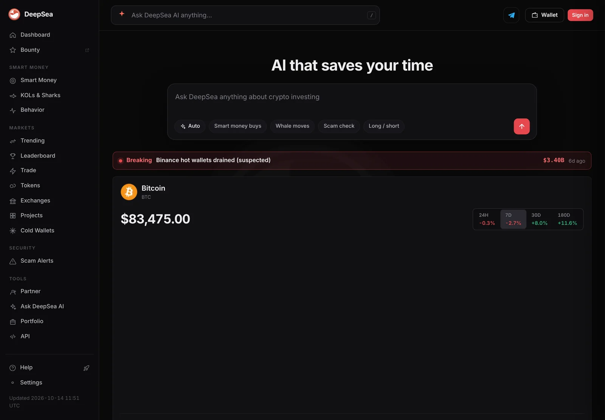
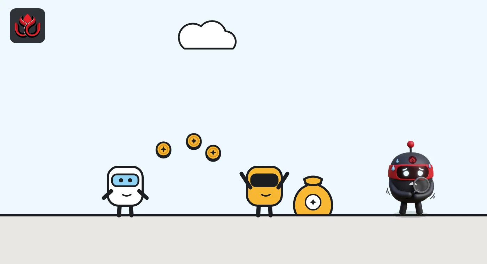
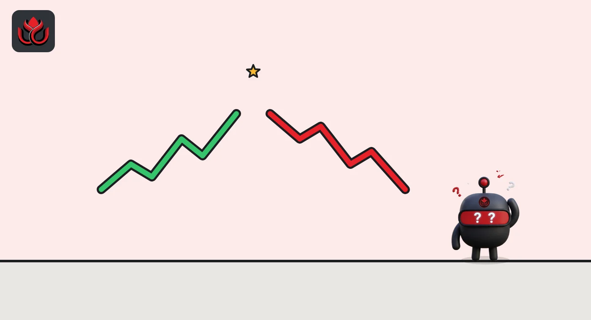

Copy trading explained: how it works, what lead traders take and why results differ
Copy trading lets you automatically mirror another trader's positions on an exchange, in return for a share of any profit. Your results can differ from theirs because of order size, slippage and timing, and regulators warn it can encourage herd behavior and frequent trading.
Key points
- Copy trading opens and closes trades in your account when a chosen lead trader does, using limits you set.
- Lead traders are paid a share of profit: 10% on Binance spot copy trading, and on OKX a level-based share that its rules cap at 30% and its FAQ puts at 8% to 13%.
- Copied trades can fail or fill at worse prices because of slippage, minimum order sizes or low balances.
- ESMA has warned copy trading features may encourage frequent trading and herd investing. Losses can exceed what the lead trader shows.
 What DeepSea's data shows
What DeepSea's data shows
Leaderboards show why copied results vary. DeepSea's KOL leaderboard ranked influencers' wallets by realized profit over seven days on November 2: the top wallet made $10.77 million and the second $4.60 million, but the 10th made $136,300 and the 50th $17,000. Many wallets near the top showed no recent trades.
DeepSea itself offers alerts when a followed wallet buys or sells, and users confirm each trade. Its KOL risk watch also flags influencer wallets linked to risky funds, noting that a flag is not proof of wrongdoing.

Data: DeepSea (desea.io), checked November 2, 2026, 7:56 a.m. ET.
What is copy trading?
Copy trading is a service where your account automatically follows another trader. When the trader you pick, called a lead trader, opens or closes a position, the platform does the same in your account. FINRA, the US broker regulator, describes it as "imitating the trading activity of other traders" in a report on social media investing.
Crypto exchanges such as Binance, OKX, Bybit and Bitget all offer versions of it, for spot trading (buying the coin itself) and for futures (bets on price with leverage).
It differs from following tips on social media because the trades are placed for you, automatically, inside your exchange account. You choose the leader and the limits; after that, the platform acts without asking you about each trade. OKX itself describes copy trading as a social investment approach and a portfolio management tool.
How does copy trading work on an exchange?
On Binance spot copy trading, your funds move from your spot account into a separate copy trading account that you cannot withdraw from directly. You can copy up to 10 portfolios at once, with a minimum of 10 or 100 USDT depending on the mode. Binance offers two sizing modes:
- Fixed Ratio: your order is proportional to the lead trader's.
- Fixed Amount: each copied order uses a set amount you choose.
On OKX, you set a maximum per order and a maximum total per lead trader. OKX says copying stops if the lead trader stops leading, hits a risk control or a daily limit, or if your account runs out of funds. OKX lists the United States among regions where copy trading is not supported.
Lead traders face limits too. OKX caps them at 500 trades a day and blocks a lead trade if the leader's account holds less than 500 USDT. For grid trading bots, OKX can sync your copy automatically when the lead trader changes the bot's settings, and it notifies you if the sync fails.

How do lead traders get paid?
Lead traders earn a share of their followers' profits, not of their losses.
- Binance spot: copy traders share 10% of profits and 10% of their trading fees as commission with the lead trader. Profit is settled weekly, only when the portfolio has no open orders.
- OKX: its profit sharing rules, updated August 19, 2026, say copy traders share up to 30% of their copy trading profit with the lead trader, depending on the lead trader's level, with weekly settlement. Its copy trading FAQ, updated August 26, describes the same share, also set by level, as 8% to 13% of profits. The two OKX pages give different ranges, so check the rate shown for each trader before you copy.
OKX gives a worked example: a level 2 lead trader at 10% whose followers made 550 USDT net in a week receives 55 USDT.
Why don't your results match the lead trader's?
- Slippage. Your order fills a moment later, at a different price. Binance lets you cap entry slippage at up to 3%, with default caps of 0.3% for BTC and ETH pairs and 0.5% for others. Orders beyond the cap are not placed.
- Spread protection. OKX skips a copied trade if your opening price is more than 0.5% worse than the lead trader's.
- Size limits. In Binance's Fixed Ratio mode, slippage can leave your order smaller than the lead trader's. Orders below a coin's minimum size fail.
- Failed copies. Binance closes portfolios after five consecutive failed orders.
- Fees. You pay normal trading fees plus the profit share, so the same gross gain nets you less.

What do regulators say?
The EU markets regulator ESMA, in a July 2024 risk analysis of trading apps, said features like copy trading could encourage frequent trading and may risk contributing to herd investing. It grouped copy trading with gamification techniques.
FINRA notes that social investing channels can contain inaccurate or intentionally false information. The UK's FCA, in an October 2025 warning, criticized finfluencers who promise unrealistic returns to people who copy their trades. In the same warning about offshore CFD firms, it said more than 90,000 people lost about £75 million over four years at a single firm.
What are the main risks?
- Past results do not repeat. Binance warns you may lose your investment if the followed strategy fails.
- Leverage. Futures copy trading can magnify losses quickly.
- Incentives. Lead traders gain from profits but do not share losses, which can reward risk-taking.
- Exchange risk. Funds sit on the exchange during copying, so a hack or freeze affects them. Binance lost about $6.3 billion from hot wallets in October 2026.
- Legal limits. Copy trading is unavailable in some countries, including the US on OKX.
What controls do exchanges offer?
Binance offers a Total Stop Loss amount that sells everything in the copied portfolio at market when hit, plus a pairs filter so only chosen coins are copied. OKX lets followers cap order size and total amount per lead trader. These tools limit losses, but they cannot remove the risk.
What happens when you stop copying?
On Binance spot copy trading, stopping a copy converts token balances above 10 USDT back into USDT and returns them to your spot account; smaller balances come back as tokens. Shared profits are released when you stop copying, when the lead trader closes the portfolio, or when you withdraw profits. Binance also notes that BNB cannot be used to cut trading fees in copy trading, and that copied buys are sent as immediate-or-cancel limit orders while sells go out at market.
On OKX, profit is only settled for futures when you have no open copied positions, and for spot only when all crypto bought that week has been sold. Otherwise, sharing rolls into the next weekly period, according to its rules.
LC Insight analysis
This section is our reading of the facts above, not a statement of fact.
- We think the profit share design is the core risk. Lead traders take a cut of gains but carry none of the follower's losses, which pays for bold bets.
- Leaderboards show the lead trader's results, not yours. Slippage caps and minimum sizes mean followers can trail the headline numbers.
- Regulators so far warn more than they rule. Clear rules on who counts as giving investment advice would change how exchanges run these programs.
What's next
- Any EU or UK rules classifying copy trading as advice or portfolio management.
- Changes to profit share caps or settlement rules at major exchanges.
- Finfluencer enforcement actions involving copy trading promotions.
Frequently asked questions
Is copy trading legal?
It depends on where you live. OKX says copy trading is not supported in the United States, among other regions, and Binance requires identity checks and an eligible region.
How much do lead traders take?
On Binance spot copy trading, 10% of profit plus 10% of trading fees as commission. On OKX, a share of profit set by the lead trader's level: up to 30% under its profit sharing rules, while its FAQ gives a range of 8% to 13%.
Can I lose more than I put in?
On spot copy trading you can lose the amount allocated. With leveraged futures, losses can be fast and large, and exchanges warn you may not get back what you invested.
Why was my copy trade not opened?
Common reasons include low balance, slippage beyond your cap, orders below the minimum size, or, on OKX, an opening price more than 0.5% worse than the lead trader's.
Disclaimer. This article is based on public information and the sources listed below as of the update time shown. It is for information only and is not investment, legal or tax advice. Figures may change as companies and authorities publish new data.
Sources
- Binance, Spot Copy Trading Guide (Copy Trader), updated August 25, 2026
- OKX, Copy trading FAQ, updated August 26, 2026
- OKX, Lead traders: profit sharing rules, updated August 19, 2026
- ESMA, Neo-brokers in the EU, TRV Risk Analysis (July 9, 2024)
- FINRA, Social Media-Influenced Investing: Tools
- FCA, FCA warns investors in CFDs risk losing out on protections (October 30, 2025)